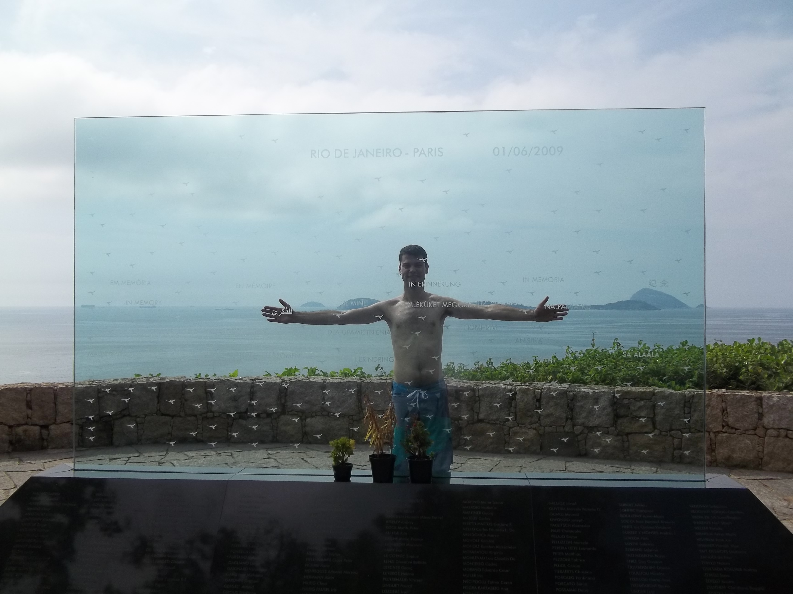
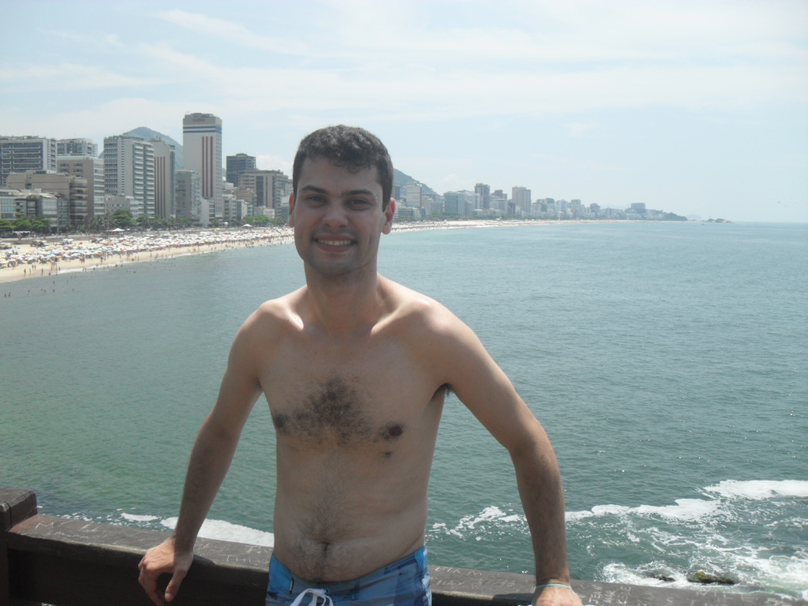
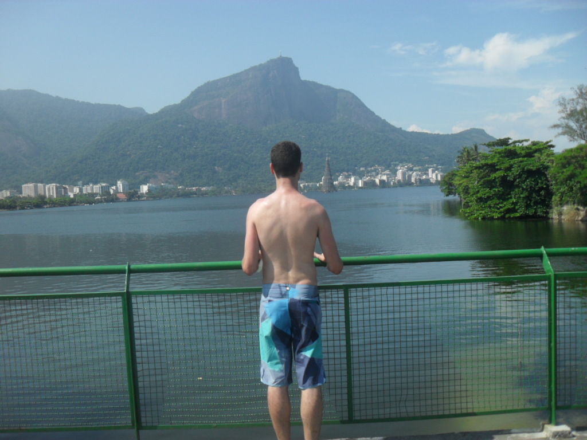
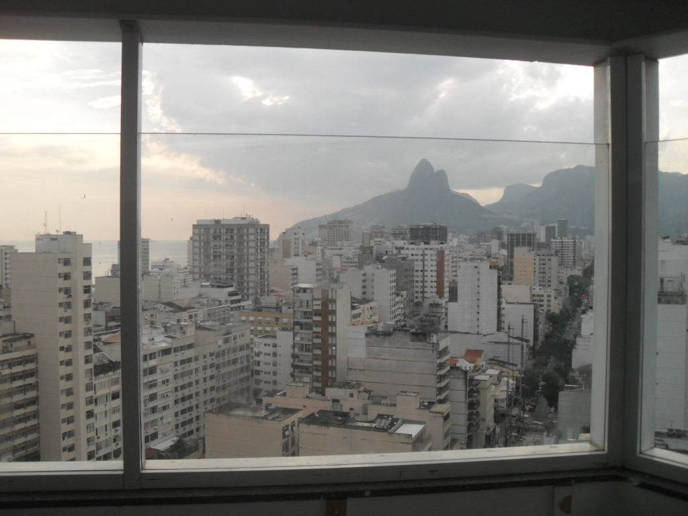
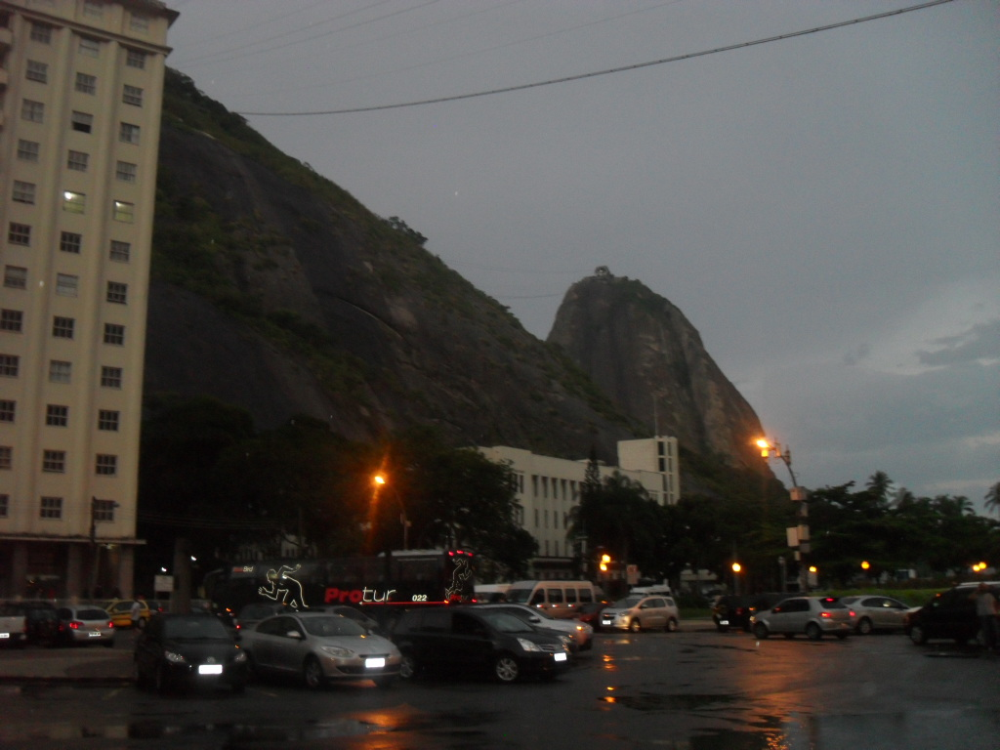

Rio de Janeiro
Período de 28/12/2012 a 02/01/2013
Segundo dia (29/12/2013)
Principais atrações:
- Parque Penhasco Dois Irmãos
- Mirante do Leblon
- Praia do Leblon
- Lagoa Rodrigo de Freitas
- Mirante da Paz
- Praia Vermelha
O que fizemos:
Pegamos metrô de estação Flamengo, saltamos a estação General Osório, pegamos ônibus, chama-se Metrô na Superfície, descemos o ponto Alto do Leblon. Caminhamos para Parque Penhasco Dois Irmãos.
{kind=link}
Descemos de Parque Penhasco Dois Irmãos, fomos a Mirante do Leblon, a visita incrível às praias de Leblon, Ipanema e Arpoador.
{kind=link}
{kind=link}
Meus amigos mergulharam e descansaram na praia do Leblon, enquanto eu fui caminhada para Lagoa Rodrigo de Freitas.
{kind=link}
Voltamos para Praia do Leblon, encontramos amigos, indo para o Mirante da Paz, porém o acesso para a comunidade do Cantagalo, Pavão e Pavaozinho. Tem que subir o elevador, depois escada e apreciando a paisagem urbana e oceano.
{kind=link}
{kind=link}
Descemos a Mirante da Paz, pegamos metrô General Osório, e descemos estação Botafogo, pegamos táxi indo para Pão de Açúcar, infelizmente, a bilhetaria estava encerrado por causa de horário de funcionamento, eu e meus amigos tiramos na Praia Vermelha, vendo morro da Urca e Pão de Açúcar, admiramos a beleza de bondinho.
{kind=link}
Voltamos para Botafogo, comemos na Botafogo Praia Shopping. Depois, fomos para apartamento, descansamos.